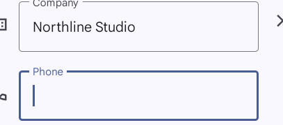

Systems research · Nikit Phadke · November 2026
Where Android RL rollouts lose time
An Android agent can choose its next action only after the device responds. Across many rollouts, resets, repeated navigation and screen capture consume the time available for learning. DroidFork investigates how much of that environment work a trainer can reuse.

The environment cost of online RL
The resource a training team needs is a stream of completed, scored interactions with the application.
What happens between two policy decisions?
A policy receives a screenshot or UI hierarchy, chooses an action, and sends it to Android. The emulator must deliver the input, the app must process it, and the host must return an observation that reflects the change. At the end of an episode, the trainer must determine whether the task succeeded and prepare a device for another attempt. These operations occupy workers even when choosing the next action is cheap.
Why repeated attempts are expensive
Imagine training an agent to save the right phone number. Every attempt may open Contacts, enter a name and company, and reach the same unsaved editor. Only then do different choices produce different outcomes. If each rollout starts at the beginning, the trainer repeatedly pays for actions it has already observed. A pool of warm devices can run several attempts concurrently, but each worker still has to execute those actions.
Emulator latency has also motivated algorithmic work: Android Coach uses a learned critic to evaluate multiple candidate actions at a costly online state. We investigated the environment side of the same problem. Could a trainer execute several real continuations while paying for their shared history only once? Android Coach, ACL 2026 ↗
Measuring complete rollouts
We started with the trainer’s unit of work: two trajectories from task start through an independently checked reward.
In the initial experiment a script supplied the actions, so model inference and policy updates contributed no time. Two Android 15 trajectories reached a contact editor, entered different phone numbers and saved. A judge queried the Contacts Provider to check the outcome. One branch deliberately chose the alternate number. The reward split tested the environment’s ability to distinguish outcomes.
| Strategy | Median batch | Rollouts per host-hour |
|---|---|---|
| Cold boot and replay | 47.74 s | 150.9 |
| Warm rewind and replay | 24.39 s | 295.4 |
| On-demand machine fork | 40.96 s | 174.0 |
Rates extrapolate from completed trajectories and total measured batch time. Warm replay started with two running workers and replayed their prefixes in parallel. Provisioning and retiring that pair cost a separate median 5.61 s if done for every batch. Cold replay and on-demand fork included launch and release.
Warm replay won this workload. Forking avoided repeating the prefix, but the parent had to reach the branch point and save its state before either child could continue. That result gave us a concrete engineering question: how much of the time spent creating a usable child could we remove? Full batch measurements ↗
Why investigate state forking?
The opportunity lies in reusing the work required to reach a decision that a trainer wants to explore more than once.
Preserve the point where trajectories diverge
A screenshot records what the agent saw. To execute a different tap, the trainer also needs the app’s unsaved fields, input focus, guest memory and persistent data. A machine checkpoint can supply that state to multiple children. Each child can then act, change its own data, and receive a reward while the source remains available for another branch.
When should reuse pay off?
For four continuations, replay executes the prefix four times. Forking executes it once, captures a checkpoint and restores four children. The three avoided prefixes must pay for capture and restoration. Longer prefixes and more visits to the same decision make the trade more favorable. If actions diverge immediately, or two warm workers can replay short prefixes concurrently, elapsed time can favor replay.
Why require a fresh child?
A trainer may decide which checkpoint to revisit only after seeing an observation or reward. Preparing a device for every possible decision ties up emulator slots. In a separate experiment a parked child resumed and passed its tap check in a median 0.482 s, after 4.655 s of advance preparation. We therefore tested whether the source alone could be prepared ahead of time, with every child created after the request. Prepared and on-demand measurements ↗
Locating the bottlenecks
We profiled two different boundaries: the original two-trajectory batch and a later request for one fresh child from an already saved state.
Inside the initial batch
On the fork path, reaching the shared editor took a median 12.50 s. Saving the checkpoint took 2.70 s. From requesting both children to verifying their first actions took 9.25 s. Entering the numbers, saving and scoring took a further 8.32 s. These stage medians are measured separately. They show why both prefix reuse and child readiness mattered.
Inside a single fresh branch
The full request took 3.490 s. During startup the graphics library alone took about 242 ms to load; loading the named snapshot took 134 ms. After connection, input delivery and visual observation mattered independently. In an instrumented replay the guest reported the gesture complete at 302 ms, found Phone focused at 874 ms, and finished encoding the screenshot at 2.090 s on the observer’s clock. A trainer using pixels can still be waiting after Android has accepted the action.
System design
DroidFork combines a privately mapped Android checkpoint with a host-side check of the first rendered action. It prepares shared state once and creates each child on request.
Prepare the source checkpoint
Save the Android VM with the draft open. An offline exporter puts its RAM pages in guest-address order and binds the layout to the saved snapshot index.
Create the child on demand
APFS clones supply private child disks. A modified emulator starts a new process and maps the saved RAM privately so child writes stay local. Relinking the renderer cut the observed repeat library load from about 242 ms to 5 ms. A decompressed SDK kernel and a single ADB executable probe also reduce work during launch.
Read the result from Android and the renderer
The host injects the touchscreen event. The guest returns the live accessibility tree, while the host captures the emulator framebuffer. This removes guest-side PNG encoding from the measured path and preserves the visible-state check.
Experimental method
The host was an eight-core M1 Pro with 16 GiB RAM. The Android 15 guest had 2.5 GiB RAM and a 480 × 854 display. The paired control used two vCPUs and software rendering. The native touchscreen series used a separately saved four-vCPU checkpoint and the M1 Pro GPU.
The timer starts before creating the control listener, private disks and process. The guest returns a volatile checkpoint identifier. A pass requires the expected draft in the full live hierarchy, Phone focused, and a rendered image showing its active underline with Company inactive. The timer stops after host verification.


Results
The same-checkpoint comparison and the fastest configuration answer different questions.
Matched two-vCPU comparison
Five pairs used the same immutable checkpoint, alternating which path ran first. Three of the four complete pairs favored the optimized path. In the fourth, the optimized request took 2.793 s longer.
| Path | Passed | Median |
|---|---|---|
| Control | 5 / 5 | 3.271 s |
| Optimized | 4 / 5 | 2.544 s |
Four-vCPU native touchscreen series
All six repeat launches passed. The median was 1.233 s, with a range of 1.145–1.328 s. The minimum remained 145 ms above the one-second target.
View the six requests in execution order
- 1.328 s
- 1.252 s
- 1.154 s
- 1.271 s
- 1.215 s
- 1.145 s
Fastest request
On this child the hierarchy arrived before one second. Acquiring the rendered frame and finishing verification took another 265 ms.
- Private disks and new process
- Guest connects
- Touchscreen tap sent
- Android tree confirms Phone focus
- Rendered underline verified
What this means for RL training
The optimized measurement answers how quickly one new branch can act. The training question concerns useful trajectories per host-hour and, ultimately, time to a target policy success rate.
What the experiments establish
On this host, replaying an entire task on cold devices was expensive. A warm pool was the strongest end-to-end baseline for the two short continuations. The modified emulator subsequently made it possible to create a fresh branch from an already saved state and verify its first action in a median of 1.233 s. Capture, the rest of the trajectory, scoring and cleanup fall outside that last number.
What still needs to be measured
The optimized child benchmark used one offline app transition, a prepared source and ordinary host caches. A first launch in the companion gesture series took 14.511 s. We have yet to rerun the complete training workload with the optimized fork path. Substituting its single-child minimum into an earlier two-child batch would ignore setup costs and contention.
A useful next comparison would fix the policy, tasks and worker budget; vary how long the shared prefix is and how many continuations use it; and charge for failed actions and idle reserved devices. Verified rollouts per host-hour would tell us whether the environment delivers more experience. Training to a fixed held-out success rate would tell us whether those additional, correlated branches help the policy learn sooner.
72-second film
Research film
This technical walkthrough follows the branch operation from an unsaved Contacts draft through emulator startup and a verified tap. The film shows where the earlier 3.490 s went and how the two-vCPU and four-vCPU trials performed.
Download MP4 ↓Research artifacts
Rebuild the emulator to repeat the experiment, or check the published timings and frame hashes directly from the release.